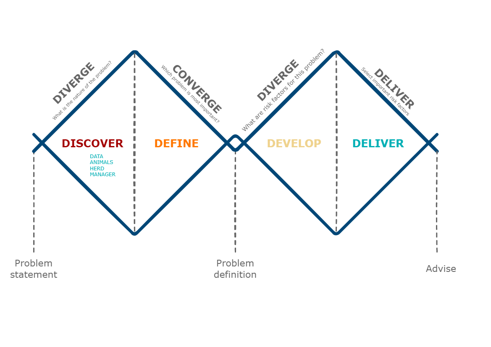

Dairy Health Management
Dairy health management is a critical aspect of ensuring the well-being and productivity of dairy cattle while maintaining the quality and safety of milk and dairy products. It encompasses a range of practices aimed at preventing, diagnosing, and treating various health issues that can affect dairy animals.
Key components of dairy health management include nutrition, disease prevention, reproductive health, and overall herd management. Proper nutrition is essential to meet the dietary needs of cows at different stages of lactation and growth, ensuring optimal milk production and body condition. Disease prevention strategies involve vaccination programs, biosecurity measures, and regular health monitoring to identify and mitigate potential health risks.
Reproductive health management focuses on maximizing reproductive efficiency through strategies like artificial insemination, heat detection, and monitoring of reproductive cycles. This ensures consistent breeding success and minimizes calving intervals.
Herd management involves creating comfortable living conditions, proper ventilation, and regular exercise to reduce stress and enhance cow comfort. Additionally, the implementation of proper milking protocols and hygiene practices ensures the production of safe and high-quality milk.
Advancements in technology have revolutionized dairy health management with the use of data-driven tools like sensors, wearable devices, and data analytics. These technologies enable real-time monitoring of vital parameters, early disease detection, and more precise management practices.
In conclusion, dairy health management is pivotal in maintaining the health, well-being, and productivity of dairy cattle. A holistic approach that integrates nutrition, disease prevention, reproductive health, and advanced technologies is crucial for sustainable dairy farming and the production of safe, nutritious dairy products.
1. Understand Dairy Animal Physiology: Develop a comprehensive understanding of the anatomical and physiological aspects of dairy animals, including their digestive system, reproductive system, immune response, and metabolic processes.
2. Identify Common Health Issues: Gain the ability to recognize and diagnose prevalent health issues in dairy cattle, such as mastitis, metabolic disorders, lameness, and reproductive challenges, through clinical observation and diagnostic tools.
3. Implement Disease Prevention Strategies: Learn to design and implement effective disease prevention strategies, including vaccination programs, biosecurity measures, and proper hygiene practices, to minimize disease outbreaks and maintain herd health.
4. Optimize Nutrition and Feeding: Acquire knowledge of dairy cow nutritional requirements at different stages of lactation and growth, and develop skills to formulate balanced diets that promote optimal milk production, body condition, and overall health.
5. Master Reproductive Management: Develop expertise in reproductive management techniques, including artificial insemination, heat detection, synchronization protocols, and pregnancy diagnosis, to maximize breeding success and minimize calving intervals.
6. Apply Advanced Technologies: Explore the integration of modern technologies such as wearable sensors, data analytics, and precision farming tools to monitor health parameters in real-time, enabling early disease detection and informed decision-making.
7. Design Cow Comfort and Housing: Learn to create and maintain comfortable housing environments that address factors like ventilation, space, and bedding, promoting cow comfort, reducing stress, and preventing health issues.
8. Practice Effective Milking Protocols: Understand proper milking techniques, udder health management, and milking equipment hygiene to ensure the production of safe, high-quality milk while minimizing the risk of mastitis.
9. Develop Herd Health Management Plans: Develop the skills to design comprehensive herd health management plans tailored to the specific needs of a dairy operation, considering factors like herd size, facilities, and available resources.
10. Promote Sustainable Dairy Farming: Gain insights into sustainable practices that balance economic, environmental, and social aspects of dairy farming, ensuring long-term profitability while prioritizing animal welfare and environmental stewardship.
By the end of this course, students will be equipped with the knowledge and skills necessary to effectively manage the health and well-being of dairy cattle, thereby contributing to improved productivity, the production of safe dairy products, and the overall success of dairy farming operations.
The learning objectives of this course are listed underneath the picture. These learning goals will be reached through iterations of the double diamond approach as illustrated for any dairy process in the picture underneath. The double diamond will be used throughout the course.

Common learning objectives with SHM & PHM
This course is closely linked to 3 other courses within the Master in Veterinary Medicine curriculum, specifically, this course shares the following learning objectives with Swine Health Management and Poultry Health Management:
The student is able to recognize relevant deviations from the normal picture and to link this to pathophysiological processes and diseases of the organ systems.
The student is able to systematically communicate his findings obtained through anamnesis, key figures and clinical research.
The student is able to use the right additional diagnostics based on knowledge of pathological processes, immunological principles and knowledge of new diagnostic techniques (Precision Livestock Farming).
The student knows how to diagnose the common disorders at individual and couple level and to advise the cattle farmer, both curatively and preventively.
The student has insight into the business processes (management, nutrition, breeding, housing and climate, biosecurity, infection prevention, economy) on a cattle farm, and the effects of this on animal health, animal welfare and products and product quality, also in relation to the requirements of the customers (incl. society).
The student acquires insight into the data in the field of animal health, animal welfare, production and product quality that are available on a cattle farm, how these are recorded, and what the meaning and coherence of this is.
The student can deal with the collection and analysis of data and draw conclusions from this for the business operations on the cattle farm.
The student knows how to place the cattle farm among the other stakeholders in the sector.
The student knows the public and private regulations that affect the work of the veterinarian on cattle farms.
The student knows what the earnings model of livestock farmers looks like, and can name and calculate the economic consequences of an animal disease and/or change in business operations.
The student knows how to make a strength and weakness analysis of a cattle farm and knows how to prioritize risk factors.
The student works evidence-based in all his work.
The student knows how a cattle farm can produce sustainably and is aware of the future challenges of the sector.
The student can create a strategic health plan.
The student is able to assess animal welfare and can give advice at farm level to safeguard and improve the welfare of animals.